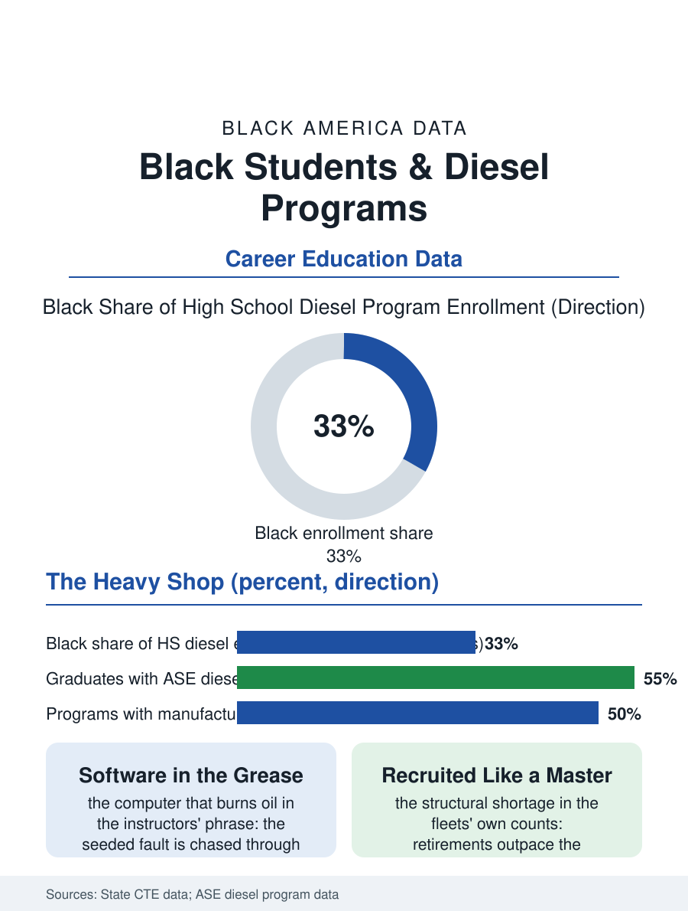

Black Education
Torque as a Teacher: Black Students and Diesel Technology
Engines the size of desks, faults chased by laptop, and a shortage that recruits the completer like a master. The diesel file.

The diesel technology program teaches the engines that move the freight: the truck, the locomotive, the marine and the generator, in the heaviest shop in the CTE building, whose graduates enter a technician file whose shortage the fleets describe in the language of emergency. This article reads the diesel program file.
The Heavy Shop
The lab's scale is its character: the engines on the stands are the size of the students' desks, the torque's numbers are the trade's poetry, and the diagnostic pedagogy follows the heavy pattern, the seeded fault in the fuel or the aftertreatment system chased through the laptop's software as much as the wrench, the modern diesel being a computer that burns oil in the instructors' phrase. The industry's partnership is the program's lifeline in the pattern of the heavy trades, the manufacturers' school programs and the fleets' donated engines and hiring pipelines structuring the strong programs entire, their map following the freight map's. The certification stack, the ASE student credentials in the diesel series, is the hiring document as in the automotive file's, with the CDL's presence in some programs as the completer's second key. The generator's file inside the trade deserves the program's note, because the standby power of the hospital and the data center is diesel's quietest and most critical duty, and the fleets' generator divisions recruit the school completers into the service whose failures are measured in the darkened wards of the outage file, a responsibility the instructors name when the class asks why the torque matters. The emissions era has rewritten the trade's knowledge within the instructors' own careers, the aftertreatment systems and the regeneration cycles being subjects the masters learned mid-journey and now teach as the curriculum's center, so that the school lab is one of the few places where the trade's past and future stand on adjacent stands, the mechanical engine and the electronic one, and the student is examined on both by the industry's design.
The Freight's Demand
The market's greeting is the file's most emphatic: the diesel technician's shortage in the fleets' and the dealers' own counts is chronic and structural, the retirement of the incumbent masters outpacing the schools' whole national output, so that the program's completers in the strong districts are recruited with the signing inducements the licensed trades reserve for their scarcest, and the wages at the first job rival the bachelor's file's starting medians in the metros the freight serves. The physical file is the heavy trades' own, the weights and the solvents and the noise of the shop floor taught as the conditions the wage compensates, in the pattern of the other booths and yards. The marine term, the harbor's and the river's engines serviced in the port cities' programs, adds the file's regional accent, the same cycle under a different sky.
Torque as a Teacher
The diesel file closes on the program's place in the freight economy's foundation, because the trucks that carry every other file's goods are kept by these hands, and the school's heavy shop is where the keeping is learned by the neighborhood's own, the program being, in the districts that run it well, the school's most direct contract with the economy that surrounds it. The bureau of the file is the dynamometer's readout. The fleets count their vacancies each quarter. The file's last entry is the rebuilt engine's first start on the stand, the exhaust's roll and the instructor's hand raised for the listening silence, the class reading the idle for the fault that is not there, which is the trade's whole satisfaction taught in one minute of noise. And the fleets' recruiters, who attend the program's spring demonstrations with the intent the other files' employers reserve for the college's engineers, leave their cards in a stack the instructor distributes like grades, which in the trade's economy is exactly what they are. The cards are collected by the students with the care of young people who understand exactly what is being offered and what it has historically cost their grandfathers to be refused the same offer at the same age in the same town's economy, which is the program's deepest curriculum, taught without a single lecture on the subject.
More in Black Education
Black Educational Attainment: High School Parity, the College Gap
About 89 percent of Black adults hold a high school diploma and one in four holds a bachelor's degree or higher — the attainment ladder, the college completion gap, and the generational trend.
Historically Black Colleges and Universities: Enrollment and Degrees
More than 100 HBCUs enroll roughly 290,000 students and award about one in six Black bachelor's degrees — an outsized share from a small sector. The federal education data.
Black College Enrollment: 2.4 Million Students
About 2.4 million Black students are enrolled in American colleges — nearly two-thirds of them women. The NCES enrollment data by sector, level, and trend.
Source: State career and technical education data; ASE Education Foundation diesel technology program data.